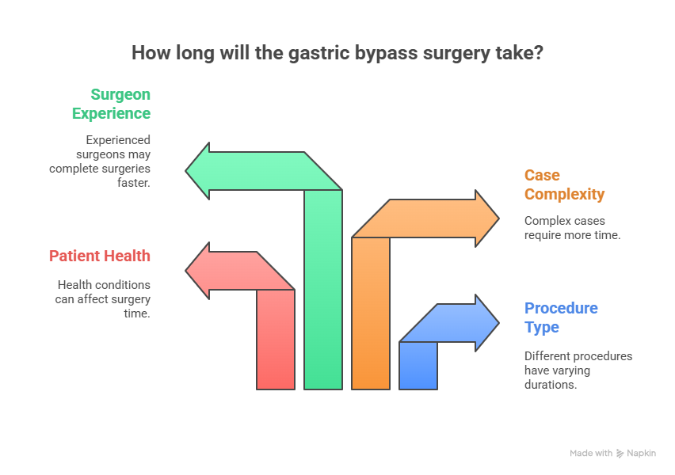
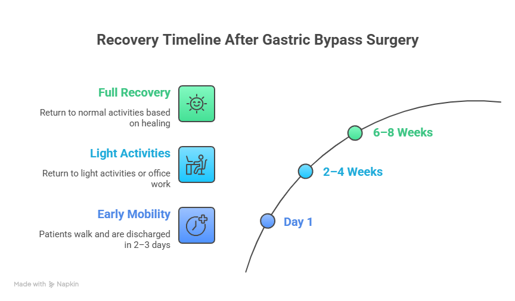

Gastric bypass surgery is one of the most popular and effective weight loss procedures for people struggling with severe obesity. It not only helps with significant weight loss but also improves obesity-related health conditions like diabetes, high blood pressure, and sleep apnea.
However, if you are considering this surgery, you may have one important question: “How long does gastric bypass surgery take?”
The answer is not the same for everyone. The time taken for the procedure depends on several factors, including the patient’s overall health, the complexity of the surgery, and the technique used. In this blog, we’ll explain everything you need to know about Gastric Bypass Surgery in Delhi, what happens during the procedure, recovery duration, and how to prepare for it.
Understanding Gastric Bypass Surgery
Gastric bypass surgery is a type of bariatric surgery designed to help people with severe obesity lose weight effectively. The procedure works by creating a small stomach pouch and connecting it directly to the small intestine, which means patients feel full faster and absorb fewer calories. This combination of restriction and malabsorption makes it one of the most successful methods for long-term weight loss.
Beyond weight reduction, gastric bypass also helps improve or even resolve obesity-related conditions like type 2 diabetes, high blood pressure, and sleep apnea. Performed mostly through minimally invasive laparoscopic techniques, the surgery is considered safe and effective when done by an experienced specialist. With proper diet, lifestyle changes, and follow-up care, patients can achieve lasting health benefits and a significantly improved quality of life.
How long Does Gastric Bypass Surgery take?

On average, gastric bypass surgery takes about 2 to 4 hours to complete. However, this time can vary depending on:
- Type of Procedure: Most gastric bypass surgeries are done laparoscopically (minimally invasive), which takes less time than open surgery.
- Patient’s Health Condition: If the patient has other medical problems or previous abdominal surgeries, the procedure may take longer.
- Complexity of the Case: More complex cases, such as very high BMI or additional repairs (like hernia correction), can extend the time.
- Experience of the Surgeon: A skilled Bariatric Surgeon in Delhi NCR with expertise in gastric bypass surgery time management can perform the surgery more efficiently and safely.
Though the operation usually lasts between 120 to 240 minutes, the total time spent in the hospital, including preparation and recovery, will be longer.
Pre-Surgery Time: What to Expect
Before the actual surgery begins, several steps are taken to prepare you:
- Pre-Operative Checks: This includes blood tests, anesthesia assessment, and final medical checks.
- Anesthesia Preparation: You will be given general anesthesia, ensuring you sleep comfortably during surgery.
- Positioning and Setup: The surgical team prepares the operating area and positions you for the laparoscopic procedure.
These steps usually take about 30–60 minutes before the surgery actually starts, adding to the total time spent in the operating room.
Step-by-Step Duration of the Surgery
Let’s break down the gastric bypass surgery time into stages:
- Anesthesia (30–45 minutes): The patient is put to sleep, and monitoring devices are connected.
- Incision and Setup (15–20 minutes): Small incisions are made for laparoscopic instruments.
- Creation of the Stomach Pouch (40–60 minutes): The surgeon divides the stomach to create a small pouch.
- Bypassing the Small Intestine (40–60 minutes): A section of the intestine is connected to the pouch.
- Closure and Final Checks (20–30 minutes): Incisions are closed, and the area is cleaned.
The entire procedure typically takes 2–4 hours, depending on patient-specific factors and the surgeon’s experience. Leading specialists like Dr. Atul Peter, known for Gastric Bypass Surgery in Delhi, often complete the surgery efficiently while maintaining the highest safety standards.
Post-Surgery Time in the Recovery Room
After surgery, you are taken to a recovery room where medical staff monitor your condition as you wake up from anesthesia. This phase generally takes:
- 1–2 hours in the immediate recovery area.
- An additional 2–3 days in the hospital for observation before discharge.
During this time, doctors ensure there are no complications, and you can tolerate fluids before going home.
Recovery Time After Gastric Bypass Surgery

Apart from the actual time in the operating room, it’s important to consider how long it takes to fully recover:
- First Week: Most patients can walk around within a few hours after surgery and are discharged in 2–3 days.
- 2–4 Weeks: You may return to light activities or office work.
- 6–8 Weeks: Full recovery with a return to normal activities, depending on your healing and energy levels.
Your surgeon will provide dietary guidelines and physical activity plans to help you recover faster and achieve long-term weight loss safely.
Factors Affecting Gastric Bypass Surgery Time
Several factors can change how long your surgery takes:
- Body Mass Index (BMI): A Higher BMI may increase surgery duration.
- Previous Abdominal Surgeries: Scar tissue can make the procedure more complex.
- Type of Gastric Bypass: Laparoscopic (keyhole) surgery is usually quicker than open surgery.
- Additional Procedures: Sometimes, gallbladder removal or hernia repair is done at the same time.
- Surgeon’s Expertise: Choosing an experienced bariatric surgeon like Dr. Atul Peter ensures a smoother and faster procedure with lower risks.
Tips to Ensure a Smooth and Timely Surgery
- Choose a qualified and experienced bariatric surgeon with a strong track record.
- Follow pre-surgery instructions carefully, including dietary changes and medication adjustments.
- Lose some weight before surgery if recommended, as it can reduce operating time.
- Stop smoking and alcohol consumption before surgery to improve healing.
- Attend all pre-operative counseling sessions to understand the process better.
Gastric Bypass Surgery by Dr. Atul Peters!
Contact Now!
Book Your Appointment
Final Thoughts
So, how long does gastric bypass surgery take? On average, the surgery lasts 2 to 4 hours, depending on the patient’s health, the complexity of the procedure, and the surgeon’s expertise. While the operation itself may seem long, the positive life-changing effects it brings far outweigh the time spent in surgery.
Choosing an experienced specialist like Dr. Atul Peter’s, known for performing safe and effective Gastric Bypass Surgery, ensures that you get the best results with minimal risks and a smooth recovery.
Frequently Asked Questions
How long does Gastric Bypass Surgery take on average?
Is Laparoscopic Gastric Bypass Surgery faster than open surgery?
How many days do I need to stay in the hospital after surgery?
Does a longer surgery mean a higher risk?
Recommended Further Reading
Have Personal Health Questions?
Consult with Dr. Atul Peters and our expert multidisciplinary team at Max Smart Super Speciality Hospital, Saket, New Delhi.
Book Your Consultation